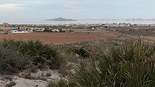

Los Nietos es una localidad que es pedanía del término municipal de Cartagena, comunidad autónoma de la Región de Murcia en España.
Situado en la orilla sudoeste del Mar Menor en la comarca natural del Campo de Cartagena al este del término municipal. Dista de Cartagena 24 kilómetros.
Tiene dos playas separadas por el club náutico: al este, la playa de la Lengua de la Vaca y al oeste, la del Arenal.

Las condiciones climáticas de la localidad corresponden al definido como clima mediterráneo seco, con temperaturas suaves en invierno y altas en verano. El termómetro puede llegar a 38 °C en julio-agosto y no suele bajar de 5 °C en invierno ya que la media anual es de 16-18 °C.
Las precipitaciones son escasas, entre 200 y 500 mm anuales, teniendo lugar sobre todo en primavera y otoño. La media es de 323 mm anuales pero la humedad también ayuda a la vegetación existente. No obstante, durante los meses de septiembre y octubre se pueden producir precipitaciones torrenciales causadas por formaciones tormentosas en altura, conocidas popularmente como gota fría, pudiendo causar importantes inundaciones.
Los vientos suelen soplar de sureste o suroeste (lebeche seco) y en otoño del este o noroeste (levante), acompañados en esta última estación de nubes y lluvias. A veces también sopla en otoño el lebeche o el de noroeste y deja el cielo sin nubes. En cambio, en verano los vientos son más fuertes y si vienen del sur (África) incrementarán notablemente el calor.
La Rambla de Ponce y de la Carrasquilla, son las ramblas ubicadas más al sur, con recorridos cortos de no más de 7 km desde El Llano del Beal y Atamaría, respectivamente. También drenan la Sierra Minera de Cartagena-La Unión y desembocan al este y oeste del núcleo urbano de Los Nietos.
En uno de sus extremos, el oriental en dirección a Islas Menores, se encuentra el final de la rambla de la Carrasquilla o de Los Belones, que desemboca en un delta pequeño, la Punta de La Lengua de la Vaca; la Lengua de Vaca es una de las áreas críticas de reproducción del Fartet (Aphanius iberus). La Rambla de la Carrasquilla nace en las proximidades de Atamaría, en las proximidades a La Manga Club, y pasa por Los Belones. La rambla es vía pecuaria («Colada de la Carrasquilla»), que en ese punto se cruza con la «Colada del Mar Menor», siendo estos caminos públicos de un gran valor ambiental en la zona, ya que actúan como verdaderos corredores ecológicos.
En el otro extremo, el occidental en dirección a Los Urrutias, cerca de la zona llamada El Arenal, se encuentra la rambla denominada el Barranco de Ponce.
El Ministerio para la Transición Ecológica, a través de la Confederación Hidrográfica del Segura, prevé una serie de proyectos de restauración hidrológico-forestal para la reducción del riesgo de inundación y la mejora ambiental de la ramblas de Las Matildes, la del Beal, el Barranco de Ponce y la rambla de la Carrasquilla, con el objetivo de retener los sedimentos acompañados de metales pesados procedentes de las balsas y escombreras de la Sierra Minera antes de que entren en el Mar Menor.

Cabezo Mingote es un cabezo de origen volcánico en las cercanías de Los Nietos Viejos. Es un Lugar de Interés Geológico (LIG).

Entre Los Nietos y Los Urrutias (más cerca de la primera localidad) se encuentra el saladar de Lo Poyo que es un espacio protegido con la categoría de Parque natural, LIC y ZEPA.
Los Nietos padece las consecuencias de la degradación del Mar Menor, provocada por el cambio de un modelo de agricultura de secano a una agricultura de regadío (agricultura intensiva) que vierte nitratos al mar y al Acuífero del Campo de Cartagena y produce eutrofización, se desarrolla la llamada "sopa verde".